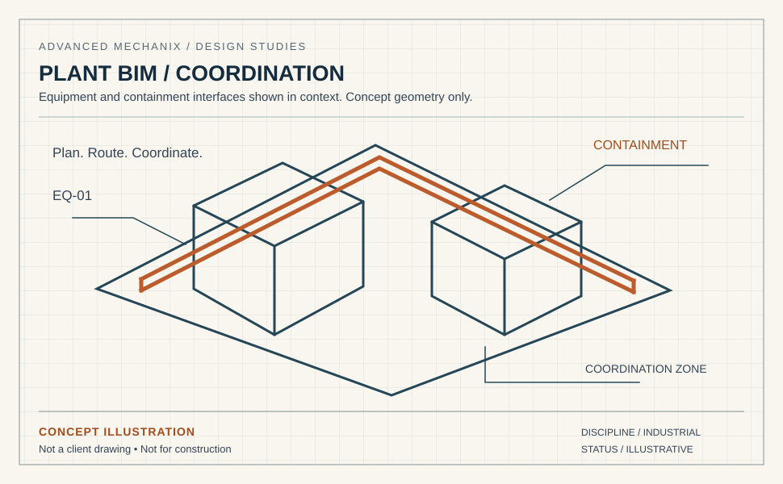

Plant models that bring
the interfaces into view.
Turn legacy drawings and engineering inputs into coordinated plant models. Equipment layouts, electrical containment and cross-discipline reviews, built around your BIM Execution Plan.

A production plan built around your project.
Most BIM teams can produce models. Few can produce models that survive multi-discipline coordination without a dozen revision cycles. The difference is disciplined LOD management, tight family standards, and clash reports that categorize by severity, not just count. For ongoing model production on live projects, see BIM & Revit MEP modeling outsourcing.
Our BIM production team works inside your BEP, your content library, and your file exchange environment (BIM 360, ProjectWise, or client-hosted). We deliver models that support the coordination review.
- Multi-discipline modeling (E / M / S / A)
- ISO 19650-aligned production with as-built reconciliation
- Built to your LOD and BEP
- Weekly clash reports with severity tracking
- Custom Revit family libraries
Everything from 2D conversion to digital twin

2D to 3D Conversion
Convert legacy drawings, PDFs, and scanned documents into coordinated parametric 3D models.

Multi-Discipline Revit
Electrical, MEP, structural, and architectural modeling with central model coordination and worksets.

Navisworks Clash Detection
Weekly clash reports categorized by severity, discipline, and resolution path. Integrated into your issue tracker.

Digital Twin Creation
Data-linked digital twins with tagged equipment, room relationships, and CMMS-ready metadata.

Shop Drawings & Fabrication
Fabrication-ready shop drawings generated from coordinated models with BOMs and cut sheets.
Custom Family Libraries
Parametric Revit families with shared parameters, type catalogs, and MEP connectors to your content standards.
Four steps from your drawings to a coordinated model
BEP Review
Align on LOD, file exchange, content library, coordinate system, and milestone schedule.
Pilot Model
First discipline modeled as a pilot. You validate against standards before full production.
Production + Clash
Weekly sprints with clash reports, milestone QA, and BIM 360 / ProjectWise integration.
Issue & Handover
Final clash-resolved models, shop drawings, and digital twin data ready for handover.
Start with a defined scope.
Agree the source information, deliverables and review requirements before the first issue.
Your team. Our team.
A clear way to work.
Agree the standards, review responsibilities and working arrangements before the first issue.
Quality: who checks the drawings?
The checking brief covers the project standard, drawing references and review responsibilities. We agree the internal checks, client review sequence, revision allowance and response windows as part of the package scope.
Standards: will you draw to our codes and templates?
We work to the standard that applies to your project: NEC (US), IEC 60364 and IEC 61439, AS/NZS 3000 (Australia and New Zealand), CSA C22.1 (Canada) and BS 7671 (UK). We draw inside your title blocks, layer conventions, cell and block libraries, not ours.
IP and NDA: what happens to our files?
Confidentiality and file access are agreed before source material is shared. Tell us if you require an NDA or a client-managed workspace, VDI or VPN. The scope identifies the permitted environment, access arrangements and handover requirements.
Stamps: who signs the drawings?
If your package requires a PE, Chartered Engineer or other statutory sign-off, tell us during scoping. We agree the responsible party and review requirements before production starts.
Time zones: when can we talk to the team?
Our production team is based in Pakistan (PKT, UTC+5). We agree your project’s working hours and handover arrangements during scoping. The table below uses a 09:00–18:00 PKT reference window to help plan the overlap; it is not a committed project schedule.
| Your time zone | Reference window, your clock | Overlap with your 09:00–17:00 |
|---|---|---|
| Perth — AWST (UTC+8) | 12:00–21:00 | 5 h (12:00–17:00) |
| Brisbane, Sydney — AEST (UTC+10) | 14:00–23:00 | 3 h (14:00–17:00) |
| Dubai — GST (UTC+4) | 08:00–17:00 | 8 h (09:00–17:00) |
| London — GMT (UTC+0) | 04:00–13:00 | 4 h (09:00–13:00) |
| New York — ET (EST, UTC−5) | 23:00–08:00 (overnight) | None — overnight handover |
| Los Angeles — PT (PST, UTC−8) | 20:00–05:00 (overnight) | None — overnight handover |
Daylight saving: Sydney, Melbourne, Canberra and Hobart move to AEDT (UTC+11) from October to April, cutting the overlap to 2 h (15:00–17:00); Queensland and Western Australia stay on standard time. UK summer time (BST, UTC+1) widens the London overlap to 5 h (09:00–14:00). US daylight time moves our day to 00:00–09:00 EDT and 21:00–06:00 PDT, so US teams can plan an overnight handover; the actual arrangement is agreed for your project.
Questions BIM managers ask us
Can you model an existing plant from 2D drawings?
What if we do not have a BIM Execution Plan?
How is the level of development decided?
What is included in the model handover?
Your BIM backlog, handled.
Scale production without scaling payroll. Talk to our BIM lead about a pilot.